This work is licensed under a Creative Commons Attribution 4.0 International License.
How to get Android 4.0.3 + Wifi!!! With Virtualbox
1. Get virtualbox: http://virtualbox.org
Then get the image: https://osdn.net/projects/android-x86/downloads/66419/android-x86-4.0-r1-eeepc.iso
2. Open Virtualbox. Click New. Then enter the name of your vm. I am gonna do Android 4. Make sure that the type is Linux and version is Linux 2.6/3.x/4.x (64 bit). Then click next.
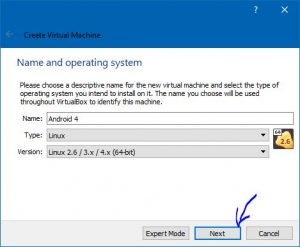Ram can be 1024 MB or more depending on your computer. Then click next.
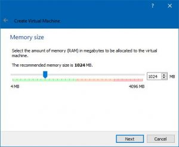Then click create. Then click next (again). Then one last next. Then select the size ( I recommend 8 GB) (the size can be what ever you want)
click create
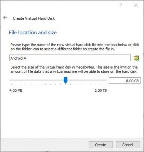3. Click settings. Then click system. Then deselect floppy and Change the porting device to PS/2 Mouse.
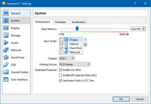Then click storage. Then click empty and then click the cd.
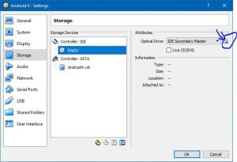Then click Choose Virtual Optical Disk File…
Then click the iso file you downloaded. Then click open.
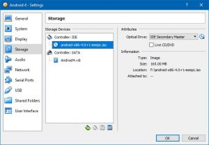Then click Network. And make sure it is these settings.
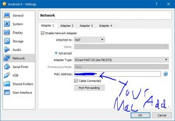Then click okay.
4. Click Start. Wait.. Wait until you see Words. Then use the down arrow to select Installation.
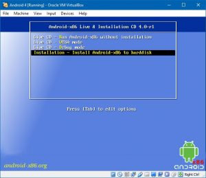Then hit enter. Enter again. Then hit the right arrow once then hit enter. Then hit enter. Make sure Primary is selected. Then Enter again. Then another enter. Then hit the right arrow 8 times. Then enter. Then type yes. Then enter. Then hit the right arrow 5 times then enter. Then enter. Then hit e, then enter. Then hit y. Wait.
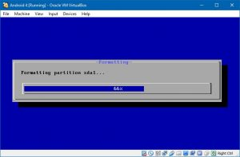Then hit y 2 times. Wait..
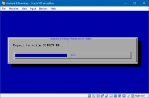Then click the X button
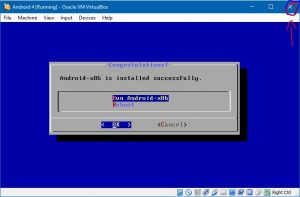Then power off the machine. Then click settings then storage. Then the iso image. Then the tiny cd icon.
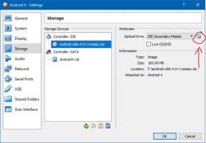Then click Remove Disk From Virtual Drive. Then click Ok. Then click start. And there you have Android 4 on virtual box. You can click in the vm to move the cursor. To get the cursor out of the vm press the control button on the right side of your keyboard.
Here are a few photos
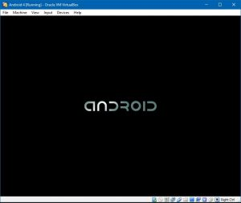 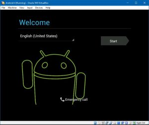 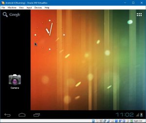 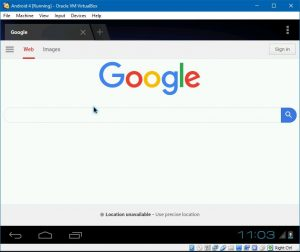